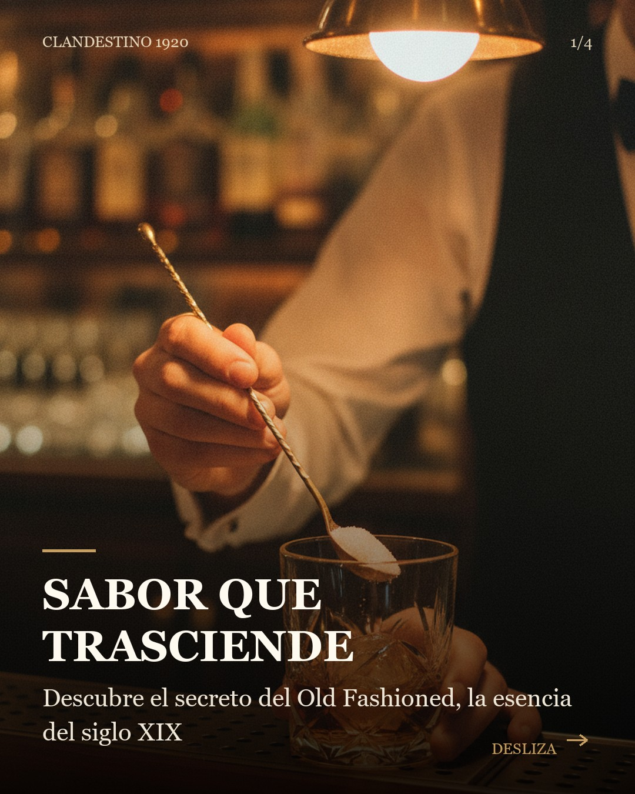
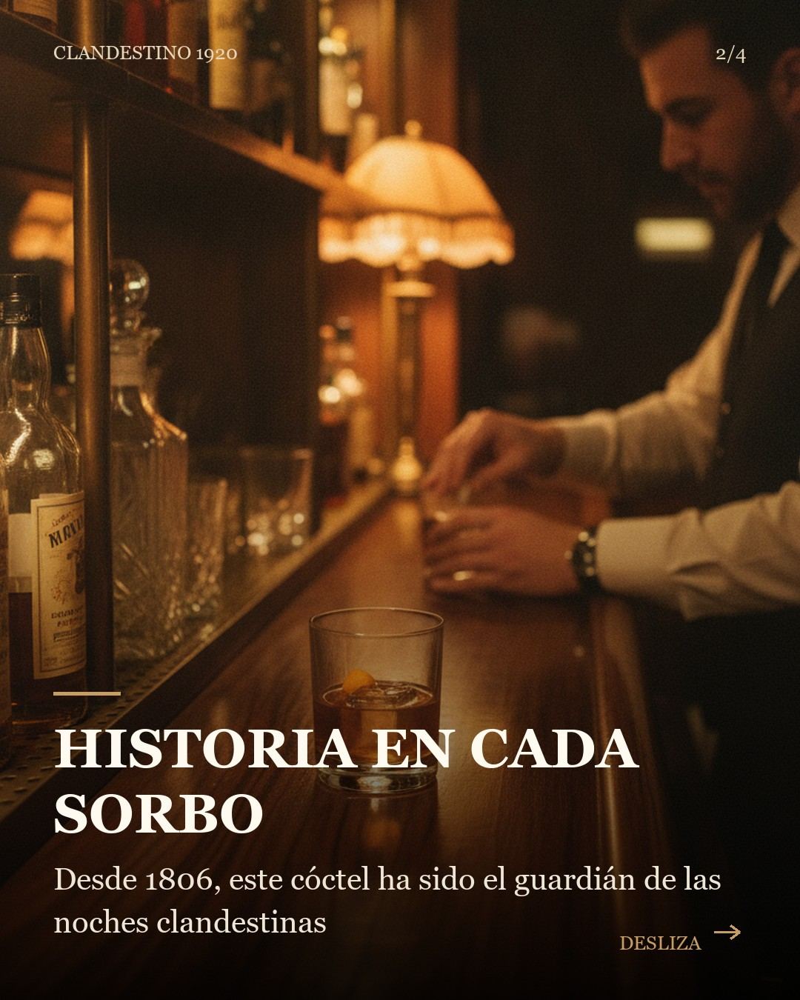
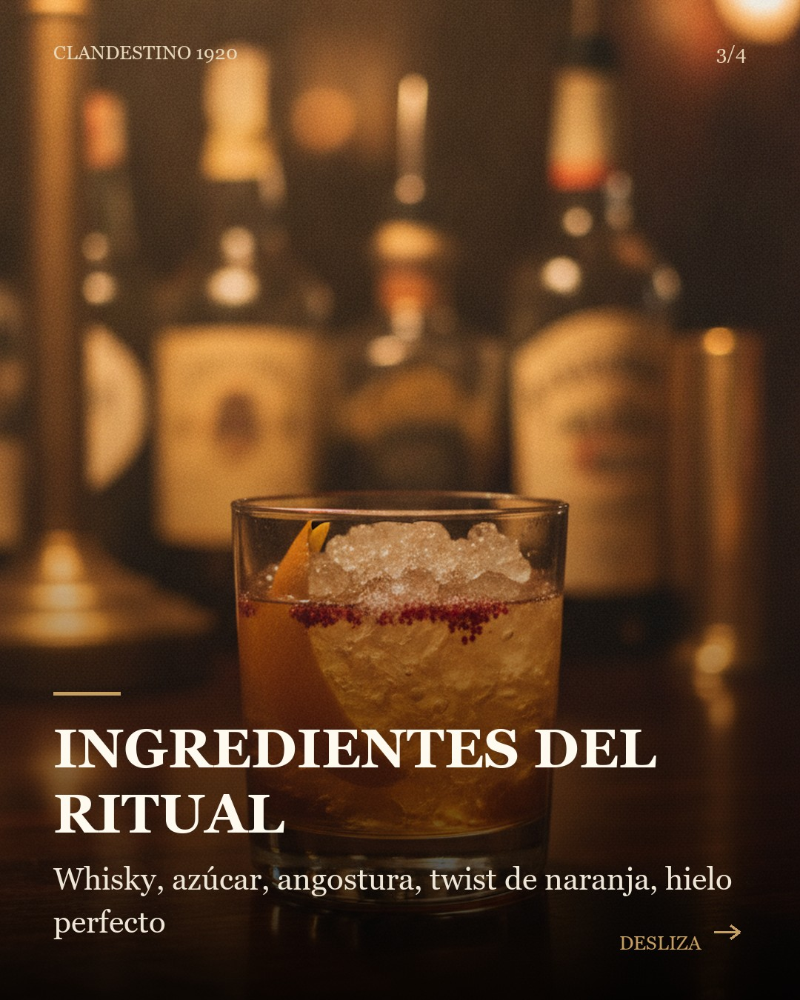
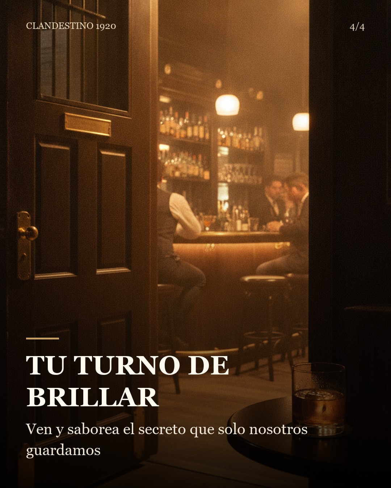

Un sistema de agentes que convierte la carta de un speakeasy de Salamanca
en carruseles de Instagram listos para publicar.
Noviembre 2026
El punto de partida
Un bar pequeño, una carta enorme
130
referencias en carta
23
cócteles con historia
0
personas para redes
Publicar a diario exige foto, texto, hashtags y una voz que no cambie cada semana.
En un bar de dos personas eso no ocurre: se publica cuando hay un hueco, y la mayoría
de las noches no hay hueco.
La idea
No es pedirle un post a ChatGPT
Un chatbot cualquiera
· No sabe qué hay en la carta
· Se inventa precios y cócteles
· Cambia de tono cada día
· Hay que corregirlo a mano
Un sistema con memoria
· Lee la carta, la historia y los alérgenos
· Respeta la voz del speakeasy
· Cita de dónde sale cada dato
· Se puntúa y se corrige solo
La diferencia no es la IA: es la información que le das y el control que le pones.
Cómo funciona
Tres pasos y ya está
01
Eliges el cóctel
En el panel, de la carta real del bar: 130 referencias.
02
El sistema lo documenta
Busca en la carta y en la historia del local lo que encaja con ese cóctel.
03
Recibes el carrusel
Cinco slides con texto, fotos y pie de foto listos para subir.
Un cóctel · cinco slides · un minuto.
Por debajo: base de datos vectorial (Qdrant) · modelo de lenguaje (Groq) · IA de imágenes (Google) · montaje local.
La regla de oro
Si no está en la carta, no se dice
El precio sale del JSON de la carta, no del modelo
Los ingredientes y los alérgenos, de la misma ficha
Cada frase arrastra los identificadores de los documentos usados
Si falta un dato, se omite: no se rellena el hueco
Ficha real de la carta
Old Fashioned
7,50 € · Cócteles
Whisky, azúcar, angostura, ralladura de naranja
Alérgenos: sulfitos
Es lo que separa una demo bonita de algo que un bar se atrevería a publicar.
El diferencial
Un agente que puede suspender
Voz de marca
8/10
Seguridad (alérgenos, precios)
7/10
Enganche
8/10
Objetivo (vender)
7/10
Uso de la carta
8/10
Nota final
7,5
APROBADO
Si baja de 7, el feedback vuelve al agente creativo y se reescribe. Hasta tres intentos.
Su último feedback pedía precio y alérgenos: exactamente lo que corregiría un community manager.
El valor
Qué cambia en el día a día del bar
De una tarde a un minuto
Antes: pensar, fotografiar, escribir, maquetar. Ahora: elegir un cóctel y revisar.
Una sola voz
El mismo tono, la misma luz y la misma tipografía en todo lo que publica el local.
Nada sale sin manos humanas
El sistema propone; el bar elige, corrige y publica. La última palabra es del negocio.
El community manager deja de escribir y empieza a elegir.
Lo que se publica sigue sonando al bar porque la materia prima —la carta, la historia, el tono— ya era del bar.
El resultado
Cuatro slides, una historia




1080 × 1350 · marca, numeración y «desliza» en cada slide · pie de foto con hashtags incluidos.
El texto lo escribe el agente; la foto, la IA de imágenes; el montaje es local.